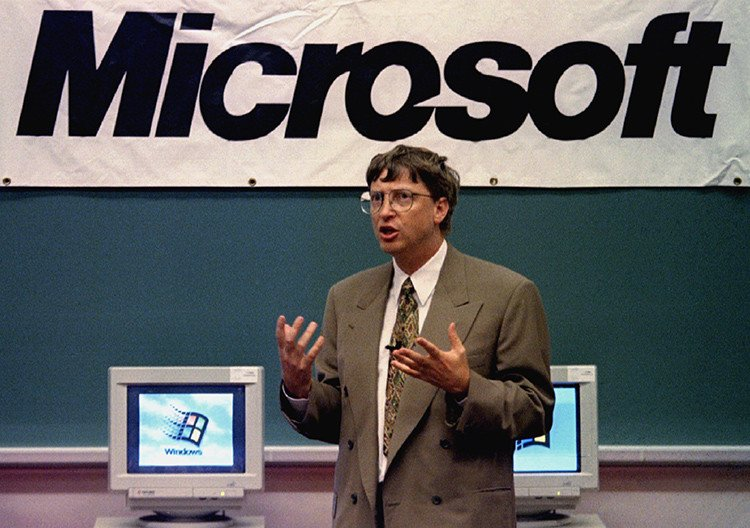

Revolución Tecnológica: Bajo su liderazgo como CEO, Microsoft creó el sistema operativo Windows, el estándar en la industria de la computación que lo convirtió en uno de los hombres más ricos del mundo.
Filantropía: Actualmente, dedica la mayor parte de su tiempo a la Fundación Bill y Melinda Gates , una de las organizaciones benéficas privadas más grandes del mundo, enfocada en mejorar la salud global, reducir la pobreza y combatir el cambio climático.
Autor e Inversor: Además de su faceta tecnológica, ha escrito varios libros sobre temas de tecnología, medio ambiente y salud, y dirige inversiones en diversos sectores a través de su firma Breakthrough Energy.
Qué hace en la actualidad:
En el año 2000, dejó sus funciones ejecutivas para volcarse de lleno en la filantropía y creó la Fundación Bill y Melinda Gates. A través de esta organización, una de las más grandes del mundo, destina gran parte de su fortuna a erradicar enfermedades como la polio, mejorar la educación, combatir el cambio climático y reducir la pobreza extrema a nivel global.